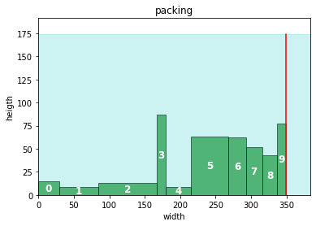

Code
import pyomo.environ as pyo
import pyomo.gdp as gdp
import pandas as pd
import numpy as np
import matplotlib.pyplot as plt
from matplotlib.patches import Rectangle cbarz
July 10, 2023
\[ \begin{array}{lll} \min & W & \\ s.t. & x_{i,2} \leq W & \forall i\\ & x_{i,1},x_{i,2} \geq 0 & \forall i\\ & y_{i,1} = 0 & \forall i\\ & [x_{i,2}\leq x_{j,1}] \vee [x_{j,2} \leq x_{i,1}] & \forall i < j \end{array} \]
## nb param
number_of_boxes = 5
shelf_depth = 1 # will be overwritten
np.random.seed(1111)
# data generation
def gen_box(number_of_boxes = number_of_boxes, wlow=1, whigh=100, hlow=1, hhigh=100):
"""generates random number_of_boxes data, where width of each box varies between wlow and whigh, and heigth within hlow and hheigth """
return pd.DataFrame({
'w': np.random.randint(wlow, whigh, size = number_of_boxes),
'h': np.random.randint(hlow, hhigh, size = number_of_boxes),
})
## data generation
boxes = gen_box()
data ={
'data' : boxes,
'solver' : 'cbc',
'model_name': 'strip_packing',
'shelf_depth' : 2 * boxes['h'].max()
}
shelf_depth = 2 * data['data']['h'].max()def _packing(df):
"""temp function to transform input data into a df like the solution for visualization"""
dt = df.copy()
dt['x1'] = dt['w'].cumsum() - dt['w']
dt['x2'] = dt['w'].cumsum()
dt['y1'] = 0
dt['y2'] = dt['h']
dt['r'] = 0
return dt
def plot_solution(sol, shelf_depth = shelf_depth):
"""plot items bounding boxes"""
fig, ax = plt.subplots()
for i, x, y, w, h, r in zip(sol.index, sol['x1'], sol['y1'], sol['w'], sol['h'], sol['r']):
color = 'g'
# if box rotated then exchange heigth and width and use red as color
if r:
h, w = w, h
color = 'r'
ax.add_patch(Rectangle((x, y), w, h,
edgecolor='k', facecolor=color, alpha=0.6))
# place item name in the middle of each box
ax.annotate(i, (x+w/2, y+h/2), color='w', weight='bold', fontsize=12, ha='center', va='center')
# set axis limits
ax.set_xlim(0, 1.1*sol["w"].sum())
ax.set_ylim(0, shelf_depth*1.1)
# draw line for total used width
ax.axvline(sol["x2"].max(), ymin = 0, ymax = shelf_depth/ax.get_ylim()[1],
label="shelf width $W$", color="r")
ax.fill_between([0, ax.get_xlim()[1]], [shelf_depth, shelf_depth], color="c", alpha=0.2)
ax.set_title('packing')
ax.set_xlabel("width")
ax.set_ylabel("heigth")
CPU times: user 50.9 ms, sys: 12.6 ms, total: 63.5 ms
Wall time: 79.8 ms
# pyomo implementation
def SP_simple(data):
"""simple strip packing, but useful to study good/new neighboor constraints later"""
# simple upper bound
w_bound = data['data']['w'].sum()
# instanciate model
m = pyo.ConcreteModel(data['model_name'])
# sets
m.I = pyo.Set(initialize = data['data'].index, doc = 'items')
m.Order = pyo.Set(initialize = m.I * m.I, filter = lambda m,i,j: i<j)
# vars
m.x1 = pyo.Var(m.I, domain = pyo.NonNegativeReals, bounds = (0,w_bound))
m.x2 = pyo.Var(m.I, domain = pyo.NonNegativeReals, bounds = (0,w_bound))
m.W = pyo.Var(domain = pyo.NonNegativeReals, doc = 'total width, to be optimized')
m.r = pyo.Var(domain = pyo.Boolean, initialize = False, doc = 'not used in no rotation model')
# objective
m.OBJ = pyo.Objective(expr = m.W, sense = pyo.minimize)
# param
@m.Param(m.I)
def w(m,i):
return data['data'].filter(items = [i], axis = 0)['w'].values[0]
# constraints
@m.Constraint(m.I, doc = 'determines box i size')
def bounding_box(m,i):
return m.x2[i] == m.x1[i] + m.w[i]
@m.Constraint(m.I, doc = 'defines total width, to be optimized')
def total_width(m,i):
return m.x2[i] <= m.W
@m.Disjunction(m.Order, xor=True)
def no_overlap(m, i, j):
return [m.x2[i] <= m.x1[j],
m.x2[j] <= m.x1[i]]
pyo.TransformationFactory("gdp.bigm").apply_to(m)
# choose solver and apply solver
solver = pyo.SolverFactory(data['solver'])
solver.solve(m)
# extract solution
sol = data['data'].copy()
# extract coords from solution
sol['x1'] = [pyo.value(m.x1[i]) for i in m.I]
sol['x2'] = [pyo.value(m.x2[i]) for i in m.I]
# placeholder
sol['y1'] = [0 for i in m.I]
sol['y2'] = sol['h']
sol['r'] = [False for i in m.I]
return solObviously rotating certain boxes would result in a tighter packing. Therefore we add a boolean variable r_i which equals true iff the box was rotated.
\[ \begin{array}{lll} \min & W & \\ s.t. & x_{i,2} \leq W & \forall i\\ & x_{i,1},x_{i,2} \geq 0 & \forall i\\ & y_{i,1} = 0 & \forall i\\ & [x_{i,2}\leq x_{j,1}] \vee [x_{j,2} \leq x_{i,1}] & \forall i < j\\ & \left[ \begin{array}{ll} r_i= & false\\ x_{i,2} = & x_{i,1} + w_i\\ y_{i,2} = & y_{i,1} + h_i \end{array} \right] \vee \left[ \begin{array}{ll} r_i= & true\\ x_{i,2} = & x_{i,1} + h_i\\ y_{i,2} = & y_{i,1} + w_i \end{array}\right] & \forall i < j \end{array} \]
def SP_rot(data):
"""strip packing with rotation"""
W_ub = data['data']['w'].sum()
m = pyo.ConcreteModel()
# sets
m.I = pyo.Set(initialize = data['data'].index, doc = 'plants')
m.Order = pyo.Set(initialize = m.I * m.I, filter = lambda m,i,j:i<j, doc ='ordering of plants')
# vars
m.W = pyo.Var(bounds = (0,W_ub), doc = 'total optimal width')
m.x1 = pyo.Var(m.I, bounds = (0,W_ub), doc = 'LHS of item i on x axis')
m.x2 = pyo.Var(m.I, bounds = (0,W_ub), doc = 'RHS of item i on x axis')
m.y1 = pyo.Var(m.I, bounds = (0,W_ub), doc = 'LHS of item i on y axis')
m.y2 = pyo.Var(m.I, bounds = (0,W_ub), doc = 'RHS of item i on y axis')
m.r = pyo.Var(m.I, domain = pyo.Boolean)
# objective
@m.Objective()
def minimal_width(m):
return m.W
# param
@m.Param(m.I)
def w(m,i):
return data['data'].filter(items = [i], axis = 0)['w'].values[0]
@m.Param(m.I)
def h(m,i):
return data['data'].filter(items = [i], axis = 0)['h'].values[0]
# constraints
@m.Constraint(m.I)
def c1(m,i):
return m.x2[i] <= m.W
@m.Constraint(m.I)
def y1_loc(m,i):
return m.y1[i] == 0
@m.Disjunction(m.I)
def rotation(m,i):
return [
[m.r[i] == False,
m.x2[i] == m.x1[i] + m.w[i],
m.y2[i] == m.y1[i] + m.h[i]
],
[m.r[i] == True,
m.x2[i] == m.x1[i] + m.h[i],
m.y2[i] == m.y1[i] + m.w[i]
]
]
@m.Disjunction(m.Order)
def no_overlap(m,i,j):
return [
[m.x2[i] <= m.x1[j]],
[m.x2[j] <= m.x1[i]]
]
pyo.TransformationFactory("gdp.bigm").apply_to(m)
# choose solver and apply solver
solver = pyo.SolverFactory(data['solver'])
solver.solve(m)
# extract solution
sol = data['data'].copy()
# extract coords from solution
sol['x1'] = [pyo.value(m.x1[i]) for i in m.I]
sol['x2'] = [pyo.value(m.x2[i]) for i in m.I]
# placeholder
sol['y1'] = [pyo.value(m.y1[i]) for i in m.I]
sol['y2'] = [pyo.value(m.y2[i]) for i in m.I]
sol['r'] = [pyo.value(m.r[i]) for i in m.I]
return solAgain obviously we can reduce the required total width if we allow to pack boxes in 2 dimensions, e.g. we place a box behind another.
\[ \begin{array}{lll} \min & W & \\ s.t. & x_{i,2} \leq W & \forall i\\ & y_{i,2} \leq D & \forall i\\ & x_{i,1},x_{i,2}, y_{i,1}, y_{i,2} \geq 0 & \forall i\\ & y_{i,1} = 0 & \forall i\\ & [x_{i,2}\leq x_{j,1}] \vee [x_{j,2} \leq x_{i,1}] \vee [y_{i,2}\leq y_{j,1}] \vee [y_{j,2} \leq y_{i,1}] & \forall i < j\\ & \left[ \begin{array}{ll} r_i= & false\\ x_{i,2} = & x_{i,1} + w_i\\ y_{i,2} = & y_{i,1} + h_i \end{array} \right] \vee \left[ \begin{array}{ll} r_i= & true\\ x_{i,2} = & x_{i,1} + h_i\\ y_{i,2} = & y_{i,1} + w_i \end{array}\right] & \forall i < j \end{array} \]
{'data': w h
0 29 15
1 56 9
2 82 13
3 13 87
4 35 9
5 53 63
6 25 62
7 23 52
8 21 43
9 12 77,
'solver': 'cbc',
'model_name': 'strip_packing',
'shelf_depth': 174}def SP_2dim_rot(data):
"""strip packing with rotation in 2 dimension"""
W_ub = data['data']['w'].sum()
m = pyo.ConcreteModel()
# sets
m.I = pyo.Set(initialize = data['data'].index, doc = 'plants')
m.Order = pyo.Set(initialize = m.I * m.I, filter = lambda m,i,j:i<j, doc ='ordering of plants')
# vars
m.W = pyo.Var(bounds = (0,W_ub), doc = 'total optimal width')
m.x1 = pyo.Var(m.I, bounds = (0,W_ub), doc = 'LHS of item i on x axis')
m.x2 = pyo.Var(m.I, bounds = (0,W_ub), doc = 'RHS of item i on x axis')
m.y1 = pyo.Var(m.I, bounds = (0,W_ub), doc = 'LHS of item i on y axis')
m.y2 = pyo.Var(m.I, bounds = (0,W_ub), doc = 'RHS of item i on y axis')
m.r = pyo.Var(m.I, domain = pyo.Boolean)
# objective
@m.Objective()
def minimal_width(m):
return m.W
# param
@m.Param(m.I)
def w(m,i):
return data['data'].filter(items = [i], axis = 0)['w'].values[0]
@m.Param(m.I)
def h(m,i):
return data['data'].filter(items = [i], axis = 0)['h'].values[0]
m.shelf_depth = pyo.Param(mutable = True,
initialize = data['shelf_depth'])
# constraints
@m.Constraint(m.I)
def minimize_width(m,i):
return m.x2[i] <= m.W
@m.Constraint(m.I)
def max_heigth(m,i):
return m.y2[i] <= m.shelf_depth
@m.Disjunction(m.I)
def rotation(m,i):
return [
[m.r[i] == False,
m.x2[i] == m.x1[i] + m.w[i],
m.y2[i] == m.y1[i] + m.h[i]
],
[m.r[i] == True,
m.x2[i] == m.x1[i] + m.h[i],
m.y2[i] == m.y1[i] + m.w[i]
]
]
@m.Disjunction(m.Order)
def no_overlap(m,i,j):
return [
[m.x2[i] <= m.x1[j]],
[m.x2[j] <= m.x1[i]],
[m.y2[i] <= m.y1[j]],
[m.y2[j] <= m.y1[i]]
]
pyo.TransformationFactory("gdp.bigm").apply_to(m)
# choose solver and apply solver
solver = pyo.SolverFactory(data['solver'])
solver.solve(m)
# extract solution
sol = data['data'].copy()
# extract coords from solution
sol['x1'] = [pyo.value(m.x1[i]) for i in m.I]
sol['x2'] = [pyo.value(m.x2[i]) for i in m.I]
# placeholder
sol['y1'] = [pyo.value(m.y1[i]) for i in m.I]
sol['y2'] = [pyo.value(m.y2[i]) for i in m.I]
sol['r'] = [pyo.value(m.r[i]) for i in m.I]
return sol